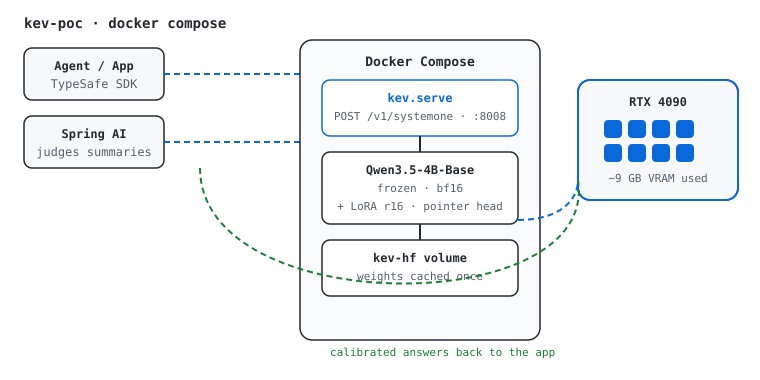

Self-Hosting Kev: A TypeSafe-SystemOne Decision Model on My Own GPU Link to heading
I was really interested in Jev when it came out. A “System One” model that answers typed questions with calibrated probabilities instead of generating text — no chat, no prose, just decisions. The Spring team added support for Jev within a week of it being released:
Spring AI: TypeSafe structured judgment
But I like things local. I have my own resources, and I don’t like training
other people’s models with my data. So when Kev
came out exposing the exact same API as Jev — TypeSafe’s POST /v1/systemone
contract — it was an easier drop-in replacement than anything else. Laya and
the other open System One models are following the same API, which makes the
whole category swappable.
What a System One request looks like Link to heading
You send a shared state plus a map of typed questions. No system prompt, no
output schema gymnastics — the model returns a probability distribution per
question, in one forward pass:

No text is generated, so your code can route on the probabilities directly: automate the confident cases, hand the rest to a person.
Why Kev instead of the hosted Jev Link to heading
Kev is a LoRA adapter plus a pointer head
on a frozen Qwen3.5-4B-Base. The adapter and head are Apache-2.0, the base is
Apache-2.0, and the whole thing serves TypeSafe’s /v1/systemone contract.
That means the same TypeSafe client code I’d use for Jev points at my own box:

That drop-in nature is exactly why I started with Kev. I’ll deploy Laya too, but when I started, Kev was the easiest path because it exposed the same API as Jev.
What I use it for Link to heading
I’m already using Kev to evaluate and judge summaries generated by other
models, for my recent-cve-news
project: one model writes, Kev decides whether the write-up is good enough to
publish. A typed noul for “is this complete?” and a score for quality —
judged on my own GPU, no training data leaving my house.
I’m aware of this version of Kev’s limitations (it documents them itself):
training used states of up to 384 tokens, date arithmetic is unreliable
without the KEV_DATE_FACTS preprocessor, knowledge is set by the base model,
and changing option order can change an answer. So I added constraints to fit
within its parameters — bounded contexts, dates rendered as day counts, and
stable option ordering.
The deployment Link to heading
Still a big fan of Docker and Docker Compose. This is my default approach — one command, reboot safe:
git clone https://github.com/dashaun/kev-poc
cd kev-poc
docker compose up --build -d
The container runs the maker’s own kev.serve server, not vLLM. That’s a
deliberate choice: Kev is a pointer head on a frozen Qwen base, and the
SystemOne /v1/systemone contract isn’t servable by vLLM or the SystemOne
llama.cpp fork. kev.serve is the intended runtime.

Try it Link to heading
The repo is self-contained and the README has curl and TypeSafe SDK examples:
curl -s localhost:8008/v1/systemone -H 'content-type: application/json' -d '{
"state": "Shoes arrived two weeks late and in the wrong size. Also two charges.",
"model": "kev-latest",
"questions": {
"department": {"type": "choice", "instructions": "Which team?",
"criteria": {"returns": "Exchanges, refunds",
"shipping": "Delivery status",
"billing": "Charges, invoices"}},
"escalate": {"type": "noul", "instructions": "Urgent human attention?"},
"frustration": {"type": "score", "instructions": "How frustrated?",
"criteria": ["Calm", "Frustrated", "Very angry"]}
}}'
Public repo: https://github.com/dashaun/kev-poc
I hope it’s easy enough for others to use and get started quickly. If not, it’s still valuable for me — this is my default approach.
Note Link to heading
Ollama added support for System One models, and I’ve also just installed
Nimble 9B — another drop-in for the same /v1/systemone contract.